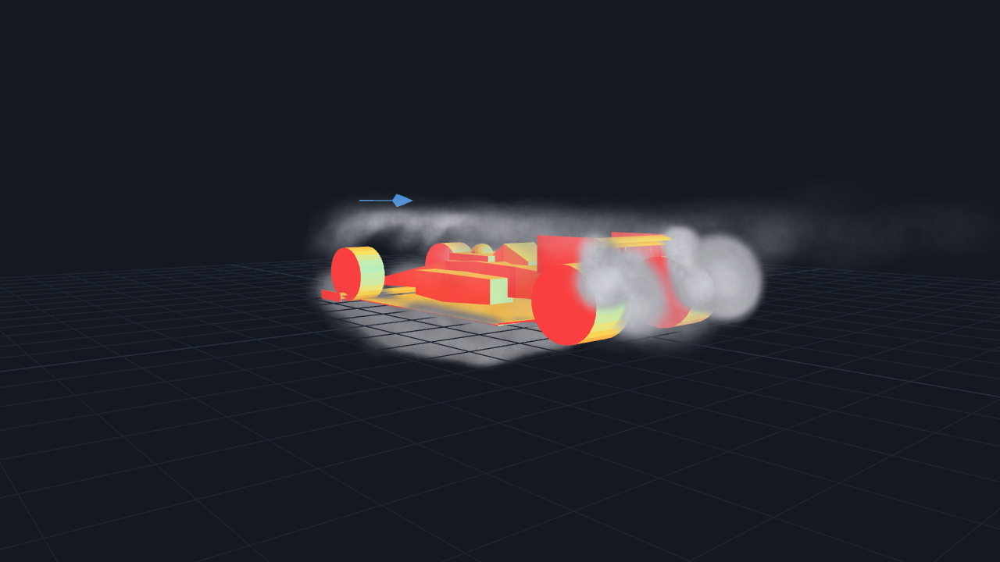

01
Motorsport Aero Simulator
Three force tiers — empirical, vortex lattice, real RANS — behind one interface. A solver failure returns an error instead of substituting synthetic numbers. The point is not the downforce numbers; it is provenance.
